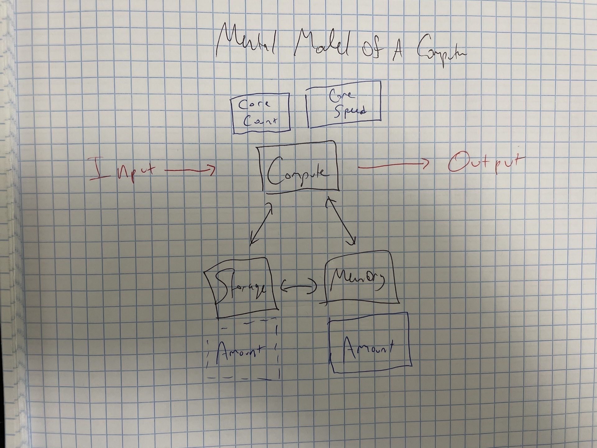
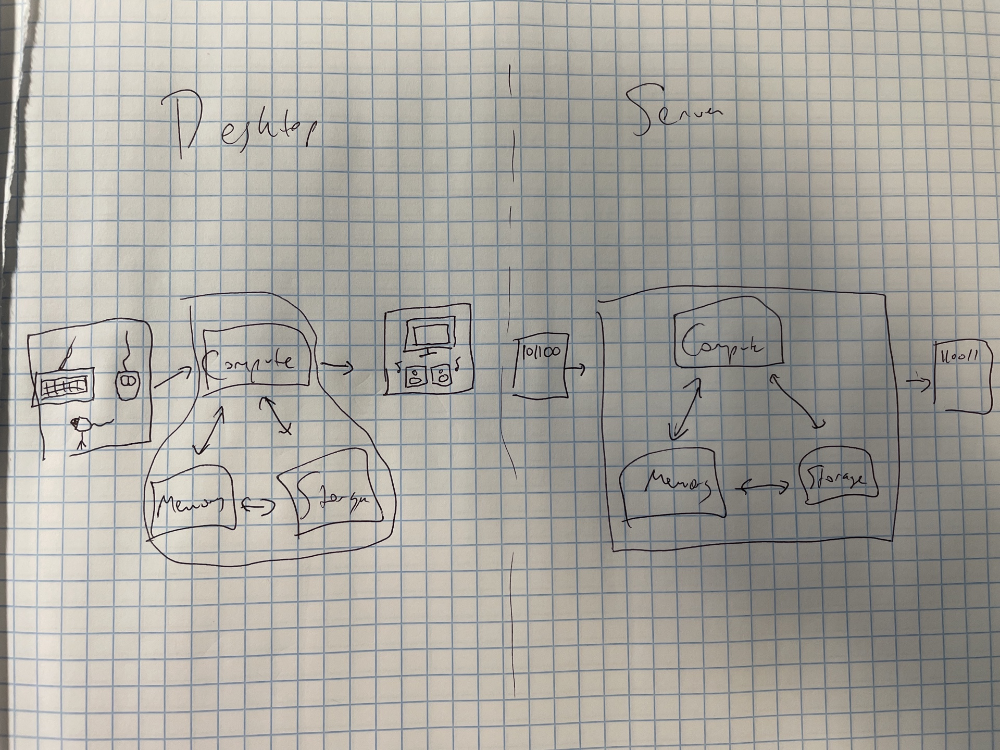

Chapter 3 Computers and Servers
Data Science is a delightful mashup of statistics and computer science. While you can be a great data scientists without a deep understanding of computational theory, a mental model of how your computer works is helpful, especially when you head to production.
In this chapter, we’ll develop a mental model for how computers work, and explore how well that mental model applies to both the familiar computers in your life, but also more remote servers.
If you’re into pedantic nitpicking, you’re going to love this chapter apart, as I’ve grossly oversimplified how computers work. On the other hand, this basic mental model has served me well across hundreds of interactions with data scientists and IT/DevOps professionals.
And by the end of the chapter, we’ll get super practical – giving you a how-to on getting a server of your very own to play with.
3.1 Computers are addition factories
As a data scientist, the amount of computational theory it’s really helpful to understand in your day-to-day can be summarized in three sentences:
Computers can only add.
Modern ones do so very well and very fast.
Everything a computer “does” is just adding two (usually very large) numbers, reinterpreted.1
I like to think of computers as factories for doing addition problems.

We see meaning in typing the word umbrella or jumping Mario over a Chomp Chain and we interpret something from the output of some R code or listening to Carly Rae Jepsen’s newest bop, but to your computer it’s all just addition.
Every bit of input you provide your computer is homogenized into addition problems. Once those problems are done, the results are reverted back into something we interpret as meaningful. Obviously the details of that conversion are complicated and important – but for the purposes of understanding what your computer’s doing when you clean some data or run a machine learning model, you don’t have to understand much more than that.
3.1.1 Compute
The addition assembly line itself – where the work actually gets done – is referred to as compute. It’s where 2+2 gets turned into 4, and where 345619912 + 182347910 gets turned into 527967822. The heart of the factory in your computer is the central processing unit (CPU).
There are two elements to the total speed of your compute – the total number of cores, which you can think of as an individual conveyor belt doing a single problem at a time, and the speed at which each belt is running.
These days, most consumer-grade laptops have between 4 and 16 cores, and may have additional capabilities that effectively doubles that number. So most laptop CPUs can do between 4 and 32 simultaneous addition problems.
In your computer, the basic measure of conveyor belt speed is single-core “clock speed” in hertz (hz) – operations per second. The cores in your laptop probably run between 2-5 gigahertz (GHz): 2-5 billion operations per second.
3.1.1.1 GPU Computing
While compute usually just refers to the CPU, it’s not completely synonymous. Computers can offload some problems to a graphical processing unit (GPU). GPUs are specialized chips used for tasks like editing photo or videos, rendering video game graphics, some kinds of machine learning, and (yes) Bitcoin mining.
Where the CPU has a few fast cores, the GPU takes the opposite approach, with many slower cores. Where a consumer-grade CPU has 4-16 cores, mid-range GPUs have 700-4,000, but each one runs between 1% and 10% the speed of a CPU core.
For GPU-centric tasks, the overwhelming parallelism of a GPU is more important than the speed of any individual core, and GPU computation can be dramatically faster. For the purposes of data science, many popular machine learning techniques – including neural networks, XGBoost, and other tree-based models – potentially run much much faster on GPUs relative to CPUs.
3.1.2 Memory (RAM)
Your computer’s random access memory (RAM) is its short term storage. Your computer uses RAM to store addition problems it’s going to tackle soon, and results it thinks it might need again in the near future.
The benefit of RAM is that it’s very fast to access. The downside is that it’s temporary. When your computer turns off, the RAM gets wiped.2
Modern consumer-grade laptops come with somewhere between 4 and 16 Gb of memory.
3.1.3 Storage (Hard Drive/Disk)
Your computer’s storage is like a freezer. It keeps things permanently, whether the factory is operating or not. The tradeoff is that things there are cold, and take some time to warm up before they can be used.
A few years ago, all hard drives were (HDDs), and were basically the same. HDDs have a bunch of magnetic disks that spin very fast (5,400 and 7,200 RPM are common speeds). Magnetized read/write heads move among the disks and save and read your data.
In the last few years, solid-state drives (SSDs) have been taking over. SSDs, which are collections of flash memory chips, are up to 15x faster than HDDs. They also can take a wider variety of shapes and sizes, and are more reliable and durable because they have no moving parts. The main drawback is that they’re usually more expensive per byte, but prices are still quite reasonable.
Many consumer laptops have only an SSD at this point. Some desktops and high-end laptops combine a smaller SSD with a larger HDD.
3.2 Choosing the right data science machine
In my experience as a data scientist and talking to IT/DevOps organizations trying to equip data scientists, the same questions about choosing a computer come up over and over again. Here are the guidelines I often share.
3.2.1 Get as much RAM as feasible
In most cases, R and Python have to load all of your data into memory. Thus, the size of the data you can use is limited to the size of your machine’s RAM. Most other limits of your machine will just result in things being slower than you’d really want, but trying to load too much data into memory will result in a session crash, and you won’t be able to do your analysis.
It’s easy to say that you’ll always want more RAM, but a rough rule of thumb for whether you’ve got enough is the following:
Amount of RAM = max amount of data * 3
Because you’ll often be doing some sort of transformation that results in invisible data copies and your computer can’t devote all of its memory, you’ll want to leave plenty of room over your actual data size. I’ve never run into problems with a scaling factor of 3, but this is definitely only a rough rule-of-thumb.
3.2.2 Go for fewer, faster cores in the CPU
R and Python are single-threaded. Unless you’re using special libraries for parallel processing, you’ll end up red-lining a single CPU core while the other just look on in silence. Therefore, single core clock speed matters more than the number of cores, and fewer, faster cores are usually preferable to many slower
If you’re buying a laptop or desktop, there usually aren’t explicit choices between a few fast cores and more slow cores. Most modern CPUs are pretty darn good, and you should just get one that fits your budget. If you’re standing up a server, you often have an explicit choice between more slower cores and fewer faster ones.
3.2.3 Get a GPU…maybe…
If you’re doing machine learning that can be improved by GPU-backed operations, you might want a GPU. In general, only highly parallel machine learning problems like training a neural network or tree-based models will benefit from GPU computation.
On the other hand, GPUs are expensive, non-machine learning tasks like data processing don’t benefit from GPU computation, and many machine learning tasks are amenable to linear models that run well CPU-only.
3.2.4 Get a lot of storage, it’s cheap
As for storage – get a lot – but don’t think about it too hard, because it’s cheap. Both a 1TB SSD and a 4TB HDD are around $100. Storage is cheap enough these days that it is almost always more cost efficient to buy more storage rather than making a highly-paid professional spend their time trying to figure out how to move things around.
One litmus test of an IT organization that is well-equipped to support data science is whether they understand this. Smart organizations know that just getting more storage is easily worth the cost in terms of the time of admins and data scientists.
3.3 Is a server different?
No.
But also yes.
At its core, a server is exactly the same sort of addition factory as your laptop, and the same mental model of what is happening under the hood will serve you well.

The big difference is in how the input and output is done. While you interact directly with a computer through keyboard and mouse/touchpad, servers generally don’t have built in graphical interfaces – by default all interaction occurs via command line tools.
One of the reasons is that the overwhelming majority of the world’s servers run the Linux operating system, as opposed to the Windows or Mac OS your laptop probably runs.3 There are many different distributions (usually called “distros”) of Linux. For day-to-day enterprise server use, the most common of these are Ubuntu, CentOS, Red Hat Enterprise Linux (RHEL), SUSE Enterprise Linux.
Along with most of the world’s servers, almost all of the world’s embedded computers – in ATMs, cars and planes, TVs, and most other gadgets and gizmos – run on Linux. If you have an Android phone or a Chromebook – that’s Linux. Basically all of the world’s supercomputers use Linux.
3.4 Getting a server of your own
Let’s completely switch gears and get practical.
Until now, this chapter has been entirely background. If you read it, hopefully you learned a little about a computer works, how your computer is mostly like, but a little unlike a server, and why you might be doing data science on a server.
If you’re reading this book, you probably want a deeper understanding of how using and maintaining a server actually works. In the last section of this chapter, we’ll walk through how you can get a server of your very own.
In contrast to the computer sitting on your desk, you’ll have to access it over the internet and you’ll use a specialized access protocol called SSH. Those topics are important enough that there are standalone chapters on them. For now, we’re going to gloss entirely over the how and why and just get you to running a server. If you follow along from this point, it’ll probably take you 10-15 minutes to be running a server of your own.
We’re going to be standing up a server on Amazon Web Services (AWS). In particular, we’ll be standing up a server in their free tier – so there will be no cost involved as long as you haven’t used up all your AWS free tier credits before now.
3.4.1 Login to the AWS Console
We’re going to start by logging into AWS. If you’ve done this before, just go ahead and log in.
If not, go to aws.amazon.com and click Sign In to the Console .
If you’ve never set up an AWS account before, click Create a New AWS account and follow the instructions to create an account. Note that even if you’ve got an Amazon account for ordering stuff online and watching movies, an AWS account is separate.
#TODO: Add link to cloud chapter
Once you’ve logged in, you’ll be confronted by the AWS console. There are a ton of things here, and it’s rather overwhelming. There’s a chapter on the business model behind this, so skip ahead if you want, or spend a minute poking around before continuing.
3.4.2 Stand up an instance
In the next few paragraphs, I’m going to give you instructions to quickly get a server up – with basically no explanation. If you read this whole book, you’ll understand all of this, the alternatives you could take, and the reasons I’m going to strongly recommend you take this server back offline in just a few minutes.
For now, click on the EC2 service (it’s under Launch a virtual machine or Compute depending on where you landed). Scroll down the launch instance button. Here are all the different Quick Start Amazon Machine Images (AMIs). Find and click Ubuntu Server 20.04 LTS – it’ll be one of the first handful.
Now you’ll be seeing the instance size chooser. It should have auto-selected a server with the label Free tier eligible. Just stick with this for now.
Scroll down and click Review and Launch, and Launch on the next page.
When you click Launch, you’ll be asked to use a key pair. Assuming you don’t have an existing keypair, select Create a new key pair, name it my_test_key, and click Download.
Keep track of the my_test_key.pem file your computer downloads.
Click Launch Instances. AWS is now creating a virtual server just for you. If you click View Instances in the lower right, you’ll see your instance. When the instance state switches to Running, it’s up and running!
3.4.3 SSH into the server
The .pem key you downloaded is the skeleton key to your server. If you were setting up a real server, you’d need to be extremely careful with this key, as it allows anyone who has it unrestricted access to the server. For the same reason, it’s also great for playing around quickly with a server.
Before we can use it to open the server, we’ll need to make a quick change to the permissions on the key. More details on what that means in the [] chapter. #TODO: which chapter?
To take the next steps, you’ll need to at least be able to open your computer’s terminal and copy/paste some commands below. If that’s new to you, feel free to check out the chapter on using the command line.
If you’re on a Mac or Linux system, you’ll do the following:
#TODO: Windows?
To access your server, click on the Instance ID link for your server, and copy the Public IPv4 DNS, which will start with ec2- and end with amazonaws.com.
In your terminal type the following
Type yes when prompted, and you’re now logged in to your server!
3.4.4 Doing A Thing
Before we log off and kill this server, let’s do one little thing.
We’re going to stand up Nginx, which is a common webserver, and serve a little webpage to ourselves.
Let’s start by installing Nginx, copy and paste the command below.
By default, our EC2 instance only allows SSH traffic, which is on port 22 by default. We need to open up HTTP traffic. Go back to your instance in the AWS console and scroll down to the Security tab. Click the blue link under Security Groups, which will start with sg- and include launch-wizard- in parentheses.
Click Edit inbound rules , then Add rule. Under Type, scroll down and select HTTP, and under Source Type, select Anywhere-IPv4. Scroll down and click Save rules.
Go back to your instance page and copy the Public IPv4 DNS again. Paste this into your browser’s navigation bar, and add http:// right before. When you navigate to the page, you’ll see the default Nginx home page.
Let’s make a quick change to the page, just for fun.
Back in your terminal that’s still SSH-ed into the instance, navigate to where that page is located:
You can edit the page by typing
If you don’t recall how to use vi, check out the command line tutorial, but for now, you can enter edit mode by pressing i, navigating around with the arrow keys, and typing.
Edit something – say change this line
<h1>Welcome to nginx!</h1 >to something a little more personalized.
When you’re done, hit esc followed by :wq.
Now, when you re-load the page in your browser, you should be able to see your changes reflected there.
3.4.5 Burn it all down
One of the best things about cloud infrastructure is that it can go away as easily as it came up. We made a number of choices here that are fine for ephemeral infrastructure for playing around. But this server should not be used for anything real.
When you’ve had your fill of playing, let’s take the server down.
Go back to the EC2 page for your server. Under the Instance State drop down in the upper right, choose Terminate Instance. If you go to the Instances page, it’ll take just a minute for the instance to go away.
3.5 Exercises
Think about the scenarios below – which part of your computer would you want to upgrade to solve the problem?
You try to load a big csv file into pandas in Python. It churns for a while and then crashes.
You go to build a new ML model on your data. You’d like to re-train the model once a day, but it turns out training this model takes 26 hours on your laptop.
You design an visualization
Matplotlib, and create a whole bunch in a loop/
Try standing up a new server and installing R and RStudio Server Open Source, or Python and JupyterHub.
Hint 1: Remember that your instance only allows traffic to SSH in on port
22by default. You access RStudio on port8787by default and JupyterHub on port8000. You control what ports are open via the Security Group.Hint 2: You’ll need to create a user on the server. The
addusercommand is your friend.
#TODO: test out JupyterHub
The reason why this is the case and how it works is fascinating. If you’re interested, it comes back to Alan Turing’s famous paper on computability. I recommend The Annotated Turing: A Guided Tour Through Alan Turing’s Historic Paper on Computability and the Turing Machine by Charles Petzold for a surprisingly readable walkthrough of the paper.↩︎
You probably don’t experience this personally. Modern computers are pretty smart about dumping RAM onto the hard disk before shutting down, and bringing it back on startup, so you usually won’t notice this happening.↩︎
There are Windows Server versions that are reasonably popular in enterprises. There are no Mac servers. There is a product called Mac Server, but it’s used to manage Mac desktops and iOS devices, not a real server.↩︎